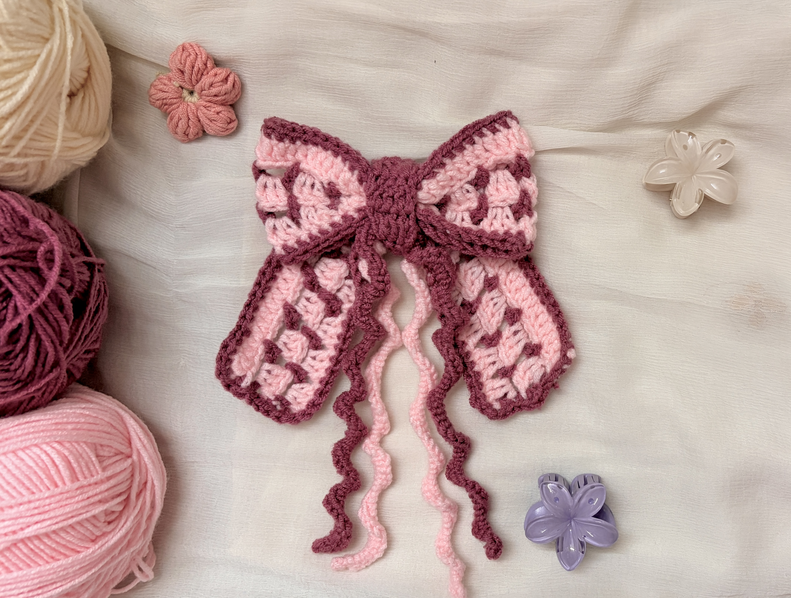
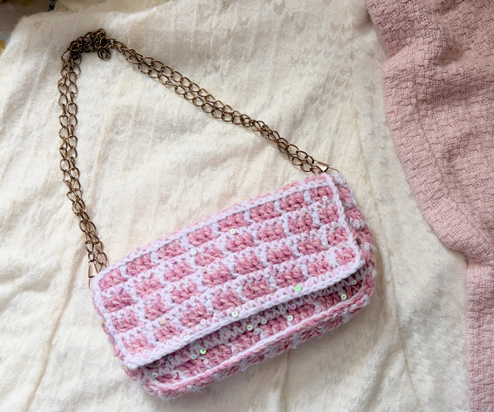
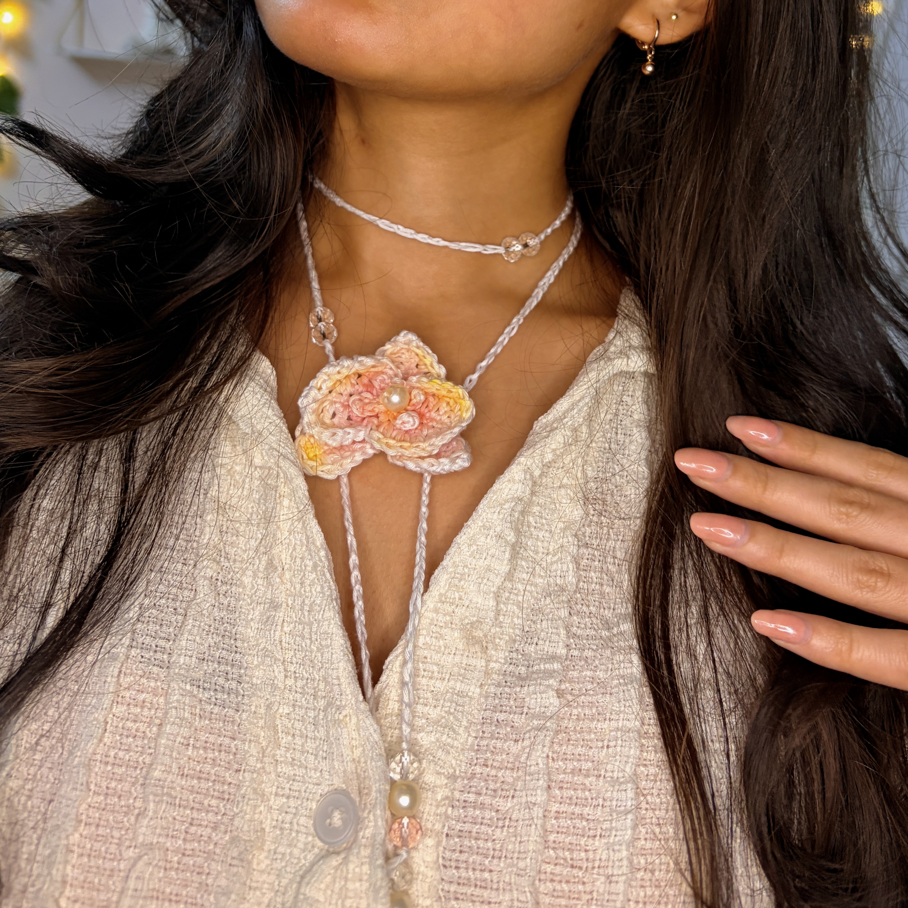
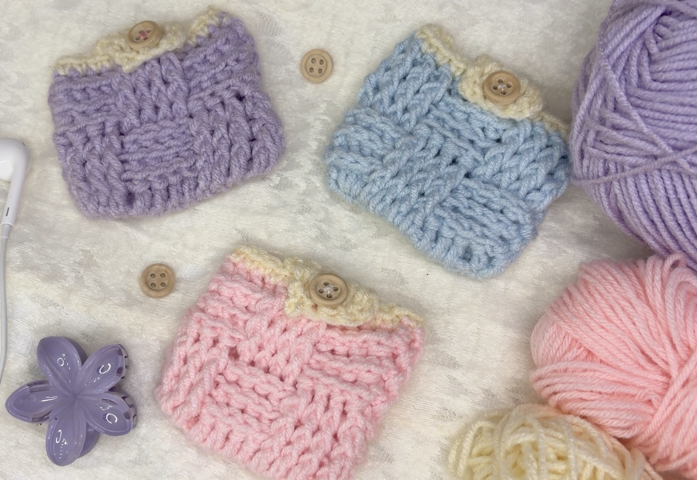
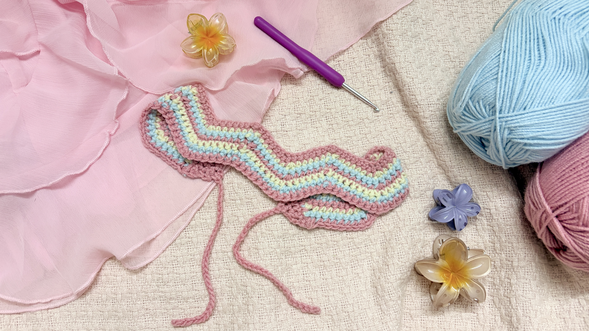
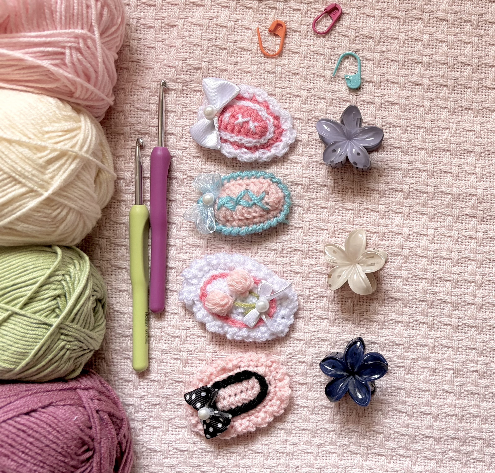
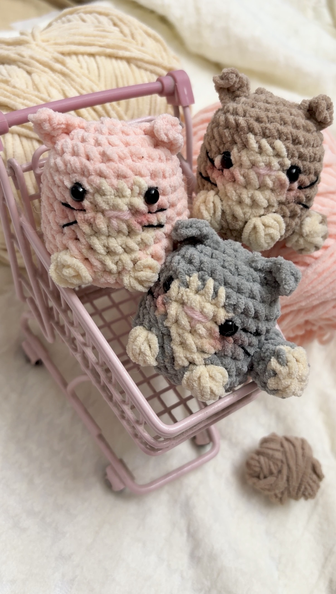

WRITTEN PATTERNS
Crochet patterns to make and love.
A collection of my original crochet patterns, written step-by-step so you can make them at your own pace.


BAGS & PURSES
Crochet Tweed Bag
A cute crochet party bag made with contrasting yarn and a touch of sparkle.
VIEW PATTERN
FLORAL ACCESSORIES
Crochet Orchid Accessories
Make a delicate orchid necklace and a statement hair clip.
VIEW PATTERN
BAGS & PURSES
Crochet Mini Purse
A quick, beginner-friendly mini purse with a beautiful basket weave texture.
VIEW PATTERN
ACCESSORIES
Zigzag Striped Hairband
A cozy, beginner-friendly hairband with soft zigzag stripes.
VIEW PATTERN
ACCESSORIES
Cute Crochet Hair Clips
Make quick, customizable clips with sweet floral details.
VIEW PATTERN
AMIGURUMI
Mini Cat Plushie
A tiny crochet cat plushie that’s perfect for your desk or bag.
VIEW PATTERN